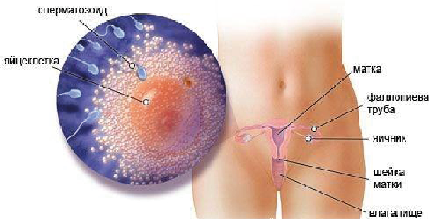
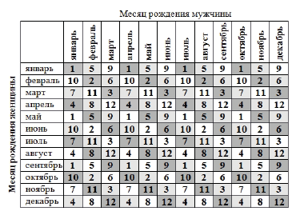
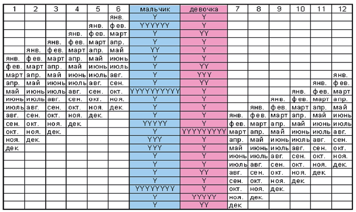

2 неделя беременности

Итак, первая неделя акушерской беременности завершилась.
Что же ожидает женский организм теперь? Какие секреты таит «овуляция»? Возможно ли повысить вероятность зачатия?
В организме женщины развивается яйцеклетка, на УЗИ видно ее как самый большой фолликул. Иногда в организме будущей мамы развиваются 2 и более яйцеклеток, тогда велика вероятность рождения разнояйцевых близнецов. В организме мужчины все идет своим чередом, как обычно. Однако, для того чтобы увеличить вероятность благоприятного зачатия, мужчине необходимо воздержаться от секса, для того, чтобы накопить достаточное количество спермы. Кстати, во время полового акта мужчина за раз извергает от 200 млн. до 400 млн. сперматозоидов. Бытует мнение, что до яйцеклетки добирается всего один сперматозоид – это не так, на самом деле яйцеклетку атакуют множество сперматозоидов, а вот проникнуть через капсулу чаще может только один…
Пол будущего ребенка зависит от папы, ведь именно его сперматозоиды несут женские Х- и мужские Y-хромосомы. Яйцеклетка имеет только женские Х-хромосомы.
В конце 2-й недели будущей беременности возможна овуляция. Для того, чтобы определить точную дату овуляции, можно воспользоваться методом определения базальной температуры. Как правило, овуляция наступает на 14 день от первого дня последних месячных. Во время овуляции яйцеклетка прорывается через стенку яичника и начинает свой путь по маточным трубам на встречу со спермой.
Возможно ли повысить вероятность зачатия?
Во время полового акта, как известно, сперматозоиды попадают в совершенно необычную для них похимическому составу среду. Для того, чтобы хотя бы один из них смог попасть чётко в «нужное нам место», гинекологи рекомендуют следующие позиции для повышения вероятности зачатия:
- «миссионерская» позиция,
- коленно-локтевое положение (когда мужчина находится сзади женщины).
Непосредственно, после семяизвержения женщине желательно находиться в положении «лёжа» не менее 20–30 минут. При этом под тазовую область можно подложить подушечку или валик.
Оплодотворение – жизнь началась!
С этого момента уже все заложено и предопределено:
ДНК, цвет глаз и волос, группа крови.
ВАШ ОРГАНИЗМ
Овуляция – это время встряски для вашего организма. Вы можете чувствовать легкий дискомфорт в области живота во время овуляции. Увеличенное количество цервикальной слизи, выделяемой из влагалища, также является признаком овуляции.
Температура вашего тела повышается. Шейка матки в это время размягчается, открывается и приподнимается. Оплодотворение яйцеклетки обычно происходит в одной из маточных труб, после чего она мигрирует в матку, где внедряется в стенку.
Обычно овуляция происходит в середине менструального цикла.
Если месячные беспокоят каждые 28 дней, то ее стоит ждать на 14-й. Но циклы от 21 до 35 дней тоже совершенно нормальны.
У некоторых женщин из-за гормональных сбоев или индивидуальных особенностей овуляция может сдвигаться или вообще случаться не каждый месяц.
Определить начало овуляции можно одним из следующих способов:
- следить за своими ощущениями – в день выхода яйцеклетки могут появиться неприятные ощущения, о которых говорилось выше, повысится либидо, увеличится количество выделений из влагалища;
- измерять базальную (ректальную) температуру по утрам, не вставая с кровати – во время овуляции она поднимается до 37-37,2 ° С;
- применять календарный метод – ориентироваться на середину цикла;
- использовать специальные тесты на овуляцию;
- просто жить половой жизнью в свое удовольствие, и ждать когда слияние клеток будущих папы и мамы произойдет само, без всяких планов на чудо.
Планируя малыша, имейте в виду, что яйцеклетка может быть оплодотворена в течение суток после овуляции, а сперматозоиды готовы ждать ее в женском теле до 72 часов, т.е. 3 дня. Соответственно, соединиться они могут даже в том случае, если половой акт произошел за 2, а то и 3 дня до овуляции. То есть само зачатие может произойти не в ночь любви, а спустя некоторое время. Хотя оптимальным для этих целей остается все-таки день «Х».
Также учитывайте, что сперматозоиды очень чувствительны к окружающей среде, поэтому не стоит наводить «излишнюю» чистоту, например, спринцеваться. Достаточно обычной гигиены перед тем, как лечь в кровать с «коварными» намерениями.
Случается, что созревает не одна, а сразу несколько, две и более яйцеклетки. В данном случае у будущей мамы есть все шансы в скором времени узнать о наступлении многоплодной беременности. Для кого-то это большое счастье, но для некоторых многоплодная беременность может стать крайне сложным испытанием. В особенности, если организм женщины ослаблен, истощен, либо имеются определенные проблемы со здоровьем – необходим тщательный медицинский контроль за дальнейшим развитием ситуации.
ЗДОРОВЫЕ СОВЕТЫ
Находясь в преддверии беременности, вам стоит задуматься о своем питании. Ваш рацион должен не только удовлетворять все ваши потребности, но и обеспечивать «строительным материалом» растущий внутри вас маленький организм.
Беременность не повод есть за двоих, но в погоне за стройностью вы можете лишить себя и вашего будущего ребенка необходимых питательных веществ, витаминов и минералов. Заботиться о фигуре, несомненно, нужно уже сейчас, не ограничивая себя в питании, а тщательно подбирая продукты для стола с точки зрения их пользы и вреда. В большинстве случаев причиной набора лишнего веса во время беременности являются избыточное употребление жиров и простых углеводов. Ни торты, ни пирожные, ни колбаса и сосиски не имеют ничего общего с полезным питанием, они лишь способствуют накоплению лишних килограммов, от которых так сложно избавиться в дальнейшем. О полезном питании написаны сотни и даже тысячи книг, читайте их, вникайте и применяйте на практике полезные советы. Но, тем не менее, следя за рационом, не насилуйте свой организм, ведь ваше спокойствие – это спокойствие вашего будущего ребенка, а оно не стоит лишней съеденной булочки.
Не только вам стоит пересмотреть свой рацион в пользу более сбалансированного. Будущему папе тоже очень важно соблюдать здоровую диету. Для созревания сперме требуются недели, поэтому вашему спутнику жизни необходимо начать правильно питаться и отказаться от вредных привычек не менее чем за три месяца до планируемого зачатия.
Диета мужчины должна обязательно включать антиоксиданты (витамины С, А и Е: имеются в свежих ягодах, фасоли, сушеных, а не жареных, орехах, специях – гвоздике, корице, душице, куркуме), в том числе селен (много селена содержится в кокосе, тунце, сардинах, бразильских орехах, говяжьей и свиной печени), незаменимые жирные кислоты (отдавайте предпочтение жирной рыбе) и марганец (особенно много марганца содержится в различных сортах чая, свежих перце и клюкве).
Ведите здоровый образ жизни и продолжайте принимать пренатальные витамины. И главное, наслаждайтесь близостью со своим партнером, восхищаясь чудесными вещами, происходящими в вашем теле.

Отказ от курения и употребления алкогольных напитков
на всем протяжении беременности – залог зачатия и развития здорового малыша
ПОЛ РЕБЕНКА
Даже тем семьям, которые рады малышу любого пола, интересно, кто же у них родится. А уж в семьях, где хотят ребёнка вполне конкретного пола рассматривают всерьёз все способы планирования ребёнка определённого пола.
В последнее время стал популярным график пола ребёнка, или японский метод планирования.
Помимо срока зачатия ребенка, этот календарь учитывает месяцы рождения обоих родителей. В первой таблице надо определить число пары: она находится на пересечении строки с месяцем рождения женщины и столбца с месяцем рождения мужчины.
Полученное число найдите в первой строке второй таблицы. Под каждым числом последовательно перечислено 12 месяцев. Выберите тот месяц, когда произошло зачатие малыша, и оцените вероятность появления на свет мальчика или девочки согласно количеству знаков в центральных столбцах таблицы. Чем больше знаков напротив месяца зачатия малыша, тем больше вероятность рождения ребёнка определённого пола.
Результат можете проверить в нашем приложении ЗДЕСЬ.
А ЗДЕСЬ мы пойдем в обратную сторону и попробуем определить, в каком месяце выше вероятность зачать мальчика/девочку.
1 неделя 3 неделя